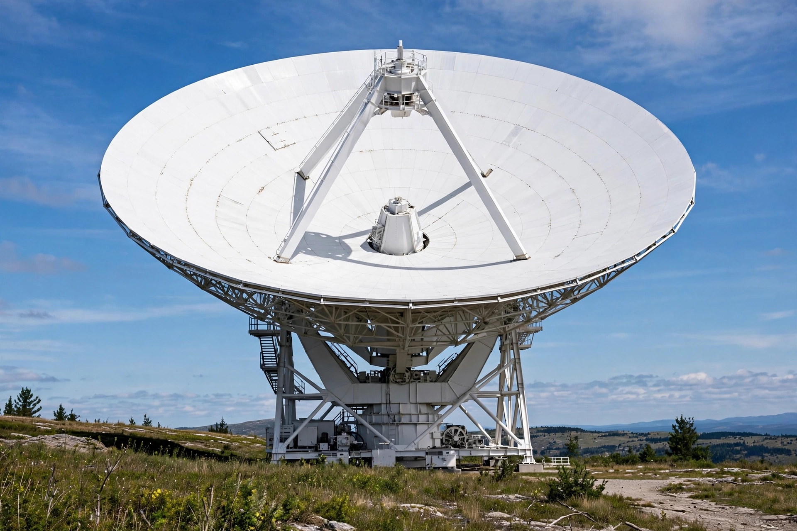

A radio telescope is a specialised antenna and radio receiver used to detect radio waves from astronomical radio sources in the sky. Unlike optical telescopes, radio telescopes can operate day and night and through cloud, opening the field of radio astronomy. They are typically large parabolic ("dish") antennas, or arrays of antennas used together as interferometers.

In 1931–32 the Bell Laboratories engineer Karl Jansky, investigating static interference, discovered radio emission from the centre of the Milky Way — the first detection of cosmic radio waves. The amateur Grote Reber built the first dedicated dish in his Illinois backyard in 1937 and produced the first radio maps of the sky. After the Second World War, radar veterans built great instruments: the 76-metre Lovell Telescope at Jodrell Bank (1957), the 64-metre Parkes dish in Australia (1961), and the 305-metre Arecibo Telescope in Puerto Rico (1963, collapsed 2020).
Radio astronomy revealed pulsars (1967), quasars, the cosmic microwave background (1965), masers, and the 21-cm hydrogen line used to map the Galaxy's spiral structure. Aperture-synthesis interferometers such as the Very Large Array and ALMA achieve resolutions rivalling or exceeding optical telescopes, and very-long-baseline interferometry produced the first images of black-hole shadows (M87*, 2019).
The largest single dish is China's 500-metre FAST (2016). The international Square Kilometre Array, under construction in Australia and South Africa, will be the largest radio observatory ever built.
From Wikipedia, the free encyclopedia.